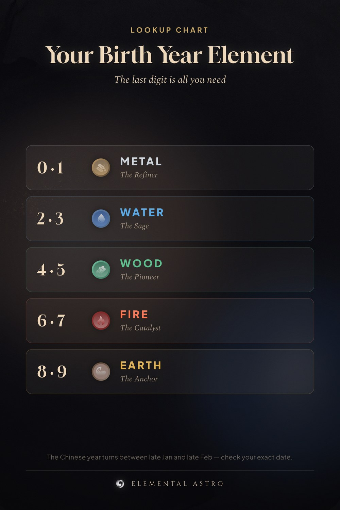

Every Chinese birth year carries one of the five elements — Wood, Fire, Earth, Metal or Water. The last digit of your birth year is all you need. Save this chart to find your element and your partner’s in seconds. Note: the Chinese year turns between late January and late February, so a birthday early in the year may belong to the previous animal. Chinese astrology, five elements, birth year chart.
https://www.elementalastro.io/tools/energy-chart-calculator